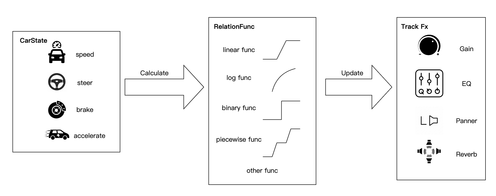

臻品乐航
An in-car music system that adapts stem-level audio effects to driving conditions.
Publicly reported in-car product deployment

Driving-state control
The system connects music playback to the driving context. It uses driving-state information and music stems as inputs, translating changes in vehicle state into audio-processing controls.
The method diagram illustrates the relationship between vehicle signals, mapping functions, and effect parameters. As the driving conditions change, the music processing responds.
Stem-level audio effects
Effects are controlled on individual music stems, allowing different parts of the music to respond to the driving state. The illustrated controls include gain, equalization, panning, and reverberation.
This creates an interactive listening experience in which the music changes with the journey.
Product application and media coverage
Public reports describe the joint introduction of 臻品乐航 by QQ Music and ZEEKR on the ZEEKR 001. DoNews describes driving-state-dependent control of individual music stems in its coverage of TME's TechME technology week. DoNews, November 3, 2025.
The feature also appears in Hangzhou.com's coverage of the updated ZEEKR 001 launch, which describes the sound field responding to vehicle dynamics. Hangzhou.com, October 12, 2025.